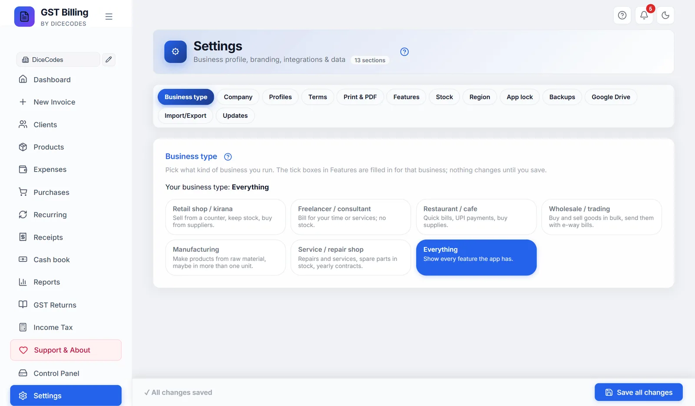
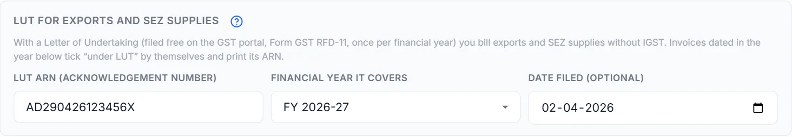
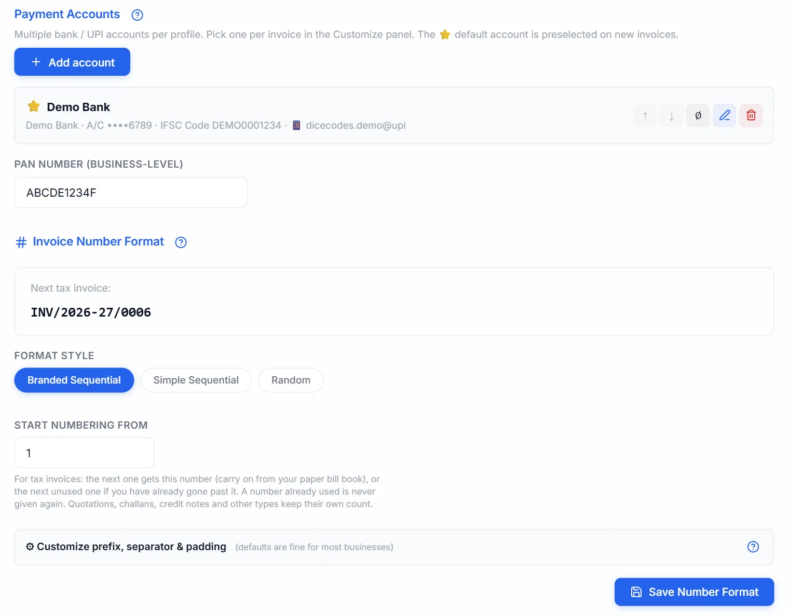
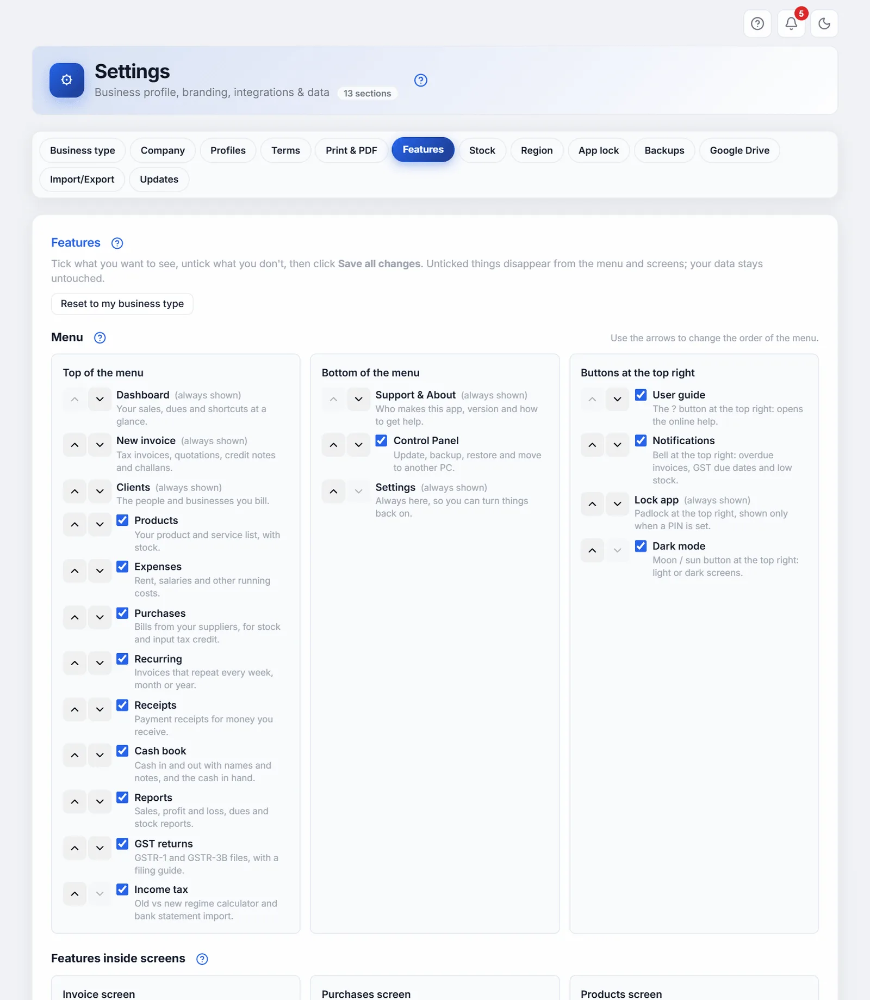

Settings
Every tab of Settings, card by card, in the order the tabs appear: Business type, Company, Profiles, Terms, Print & PDF, Features, Stock, Region, App lock, Backups, Google Drive, Import/Export and Updates. Each card in the app has a ? next to its title that opens the matching part of this page.
#Settings tabs and the Save all changes bar
Open Settings from the sidebar. Settings is split into tabs, a row of buttons at the top of the page: Business type, Company, Profiles, Terms, Print & PDF, Features, Stock, Region, App lock, Privacy & internet, Backups, Google Drive, Import/Export and Updates. Click one to show that tab. The tab you are on is filled in blue. On a phone or a small screen the buttons wrap onto two or three lines; nothing is hidden.
The app remembers the tab you had open until you close the browser tab, so coming back to Settings opens the same tab.
The ? buttons. The ? at the top right of Settings opens the help for the tab you are on. Every card inside a tab also has its own small ? next to its title, which opens the help for just that card, here or on the Print and PDF and Backups pages. They open in your web browser and need internet.
The Save all changes bar
One bar is fixed to the bottom of the screen on every tab. It shows one of two things:
- ✓ All changes saved, in grey: nothing is waiting to be saved.
- ● Unsaved changes in …, in amber, with the names of the cards you changed, for example Unsaved changes in Company Details, Low-stock alerts. Two buttons appear: Discard throws away every unsaved change and puts the cards back as they were saved, and Save all changes saves them all in one click.
You can change things on several tabs and save once at the end: switching tabs never loses what you typed.
What waits for a save, and what saves by itself
| Saves the moment you change it | Waits for Save all changes (or its own button) |
|---|---|
| Payment accounts (add, edit, delete, default, order, on or off), Business Profiles (Switch, Delete, Save as Profile), quick-start Terms templates, Print & PDF, Region, App lock, the backup folder, Cost centres | Company Details, GSTR filing details, PAN, logo, signature, stamp and Google Drive fields (own button: Save Profile); Invoice Number Format (Save Number Format); Low-stock alerts (Save); a Terms template you are writing (Save Template); Business type and Features (no button of their own) |
Something wrong?
- The bar still says unsaved after I saved: one card may have refused to save. Look for a message at the top of the screen (for example an invoice number that is too long) and fix what it says, then click Save all changes again.
- The Company form is greyed out: it stays locked for a moment while your saved details load, so nothing you type is lost. Wait a second; on a slow computer it can take a few seconds.
- I closed the app without saving: unsaved changes are lost. Saved ones are on your computer and come back next time.
#Business type
The first tab. Pick what kind of business you run, and the app shows the screens and features that business needs and hides the rest, so the menu stays short. Use it when you first set the app up, or when the menu shows things you never use.
The card shows Your business type: with the type that is saved now, or Not chosen yet.

- Pick a typeClick one of the seven cards. Each says in one line who it is for.
- Check what will changeA yellow box, Not saved yet, lists what will be turned on (Turn on: …) and turned off (Turn off: …). The tick boxes on the Features tab are filled in to match.
- SaveClick Save all changes at the bottom. The message Features saved. The menu now shows your choices. appears and the sidebar changes. Discard instead puts everything back.
Nothing is ever deleted. A business type only changes what you see. Your invoices, products and purchases stay, and come back the moment the feature is shown again. You can switch any single feature back on in Features.
| Business type | Hidden (everything else is shown) |
|---|---|
| Retail shop / kirana | Recurring, TDS / TCS, E-way bill, E-invoicing, Purchase orders, Manufacturing, Cost centres |
| Freelancer / consultant | Products, Purchases, E-way bill, E-invoicing, Purchase orders, GSTR-2B matching, Manufacturing, Cost centres |
| Restaurant / cafe | Recurring, TDS / TCS, E-way bill, E-invoicing, Purchase orders, GSTR-2B matching, Manufacturing, Cost centres |
| Wholesale / trading | Recurring, E-invoicing, Manufacturing, Cost centres |
| Manufacturing | Recurring, E-invoicing |
| Service / repair shop | TDS / TCS, E-way bill, E-invoicing, Purchase orders, GSTR-2B matching, Manufacturing, Cost centres |
| Everything | Nothing: every feature is shown |
Every type keeps Dashboard, New invoice, Clients, Settings, Help & Support, User guide, Notifications, Dark mode and Control Panel. E-invoicing is only for businesses with a yearly turnover above ₹5 crore, so only Everything turns it on; tick it in Features if you need it.
The choice is kept on this computer and is the same for every business you run in the app. It is not the same as the Business type on the Print & PDF tab, which only changes how invoices look.
Something wrong?
- A screen I use has gone from the menu: open the Features tab, tick it, and click Save all changes.
- I picked a type but nothing changed: you have not saved yet. The bottom bar shows Unsaved changes in Business type; click Save all changes.
- It says Not chosen yet: you used the app before this tab existed. Your switches stay exactly as they are until you pick a type and save.
Choosing Freelancer / consultant also sets how new invoices start: in Services mode, without the unit next to the quantity, and due in 15 days. Invoices you already made are not changed, and you can change any of it on the invoice.
#Company Details
The first card on the Company tab: your business name and address, printed at the top of every invoice. Fill it in once when you start. Change it if you move, get a GSTIN, or change your phone number.
| Field | What to put |
|---|---|
| Business Name * | Your shop or company name, as it should print. The only field you must fill. |
| Country | India for most users. The list follows your Region. Changing the country changes the names of the fields below (for example VAT number instead of GSTIN). |
| Address | Street, building and area. Two lines are enough. |
| City, PIN Code | Your town and 6-digit PIN code. |
| State | The one to get right. GST depends on it: a sale inside your state is charged CGST + SGST, a sale to another state IGST. Pick it from the list. |
| GSTIN | Your 15-character GST number, such as 22AAAAA0000A1Z5. Leave it blank if you are not registered. When you click out of the box, the app checks the pattern and shows GSTIN format looks unusual in orange if a character looks wrong. It is only a warning; you can still save. |
| Email, Phone | Printed on the invoice so clients can reach you. |
Below these come the GSTR filing details (Indian businesses only), Payment Accounts, Invoice Number Format and Branding.
- Type your detailsFill in the fields. The bottom bar turns amber: Unsaved changes in Company Details.
- SaveClick Save Profile at the bottom of the Company tab, or Save all changes in the bar. The message Profile saved! appears.
The next invoice you make uses the new details. Invoices already saved keep the details they were made with.
Something wrong?
- GST is split wrongly (IGST instead of CGST + SGST, or the other way): your State is wrong or empty. Pick the right one and save. If it is empty, the invoice screen warns you once rather than guess.
- The GSTIN warning will not go away: check for the letter O typed instead of the digit 0, or a missing character. A GSTIN has 15 characters.
- My new address is not on an old invoice: that is on purpose. Saved invoices never change. Open the invoice and save it again if you need the new details on it.
#GSTR filing details
A grey box inside Company Details, shown only when the country is India. It is used for one thing: the GSTR-1 and GSTR-3B JSON files you upload to the GST portal.
| Field | What it does |
|---|---|
| Aggregate turnover (AATO) is above ₹5 crore | Tick it if your total sales last year, for all your GSTINs together on one PAN, were more than ₹5 crore. The line below then says 6-digit HSN: every item needs an HSN code of at least 6 digits. Unticked, 4 digits are enough. The GST portal refuses a GSTR-1 where an HSN is too short. |
Save with Save Profile or Save all changes. (Older versions also asked for last year's and this year's turnover. The GSTR-1 file no longer carries them: those fields were only for 2017-18 returns.)
Something wrong?
- GSTR-1 upload fails on HSN length: check whether the tick box matches your turnover, then lengthen the HSN codes on your products.
- I do not see this box: the country in Company Details is not India.
#LUT for exports and SEZ supplies
A second grey box inside Company Details, shown only when the country is India. Fill it in if you export, or sell to units in a Special Economic Zone (SEZ), without charging IGST.
What a LUT is. A Letter of Undertaking (form GST RFD-11) is a promise to the GST department that you will follow the export rules. With a LUT, exports and SEZ supplies are billed without IGST (they are "zero-rated"), so you do not pay the tax and then wait months for a refund. Without one, you must charge IGST and claim it back. It is free, filed online in a few minutes, and valid for one financial year: file a fresh one every April, before your first export of the year. How to file it, step by step: GST basics: LUT.

| Field | What to put in |
|---|---|
| LUT ARN (acknowledgement number) | The ARN the GST portal gave you when you filed the LUT, such as AD290426123456X: usually 15 letters and digits starting with AD. Spaces are removed and letters made capital for you. If it does not look like an ARN, an amber note asks you to check it, but it is still saved. |
| Financial year it covers | The year you chose on the portal under LUT Applied for Financial Year, such as FY 2026-27. |
| Date filed (optional) | The date on the acknowledgement, for your records. |
Save with Save Profile or Save all changes. Each business in Business Profiles has its own LUT, because a LUT belongs to one GSTIN.
What it does. On a new invoice for a client abroad or an SEZ client, dated in that financial year, Export under LUT (no IGST) is ticked for you: no IGST is charged and the invoice prints the Rule 46 declaration with your ARN. See Exports and SEZ supplies under a LUT.
"This LUT is for FY 2025-26; today is in FY 2026-27": your LUT has run out. File a new one on the portal, then type its ARN and choose the new year here. Older invoices keep the ARN they were made with. I do not see this box: the country in Company Details is not India.
#Payment Accounts: bank and UPI
The bank accounts and UPI IDs your clients pay into. The default one prints in the bank details block of every new invoice; with a UPI ID, rupee invoices also carry a QR code the client scans to pay the exact amount. Add every account you use: you pick which one goes on each invoice.
- Add the first accountClick + Add account. A form opens; see Add account for each field.
- Save the accountClick Save account. The account appears in the list. The first account is marked ⭐, the default.
- Add more if you have themEach one you add is listed under the first.
Accounts save themselves straight away: you do not need Save Profile for them.
Each account in the list shows its name, bank, the last digits of the account number, IFSC and UPI ID, with these buttons on the right:
| Button | What it does |
|---|---|
| ⭐ | Makes this the default account, used on every new invoice. Only shown on accounts that are not the default. |
| ↑ ↓ | Moves the account up or down the list. The order is the order in the account picker on the invoice. |
| ∅ / ✓ | Switches the account off (it turns pale and says Inactive) or back on. Switched-off accounts are not offered on new invoices. |
| Pencil | Opens the account to edit it. |
| Bin | Deletes the account after asking. Invoices already made with it keep the bank details they were saved with. |
To use a different account on one invoice, pick it under Customize on the invoice screen.
PAN Number (business-level) sits below the list, for Indian businesses. It is your 10-character PAN, such as AAAAA1234A, and prints in the bank details block. Unlike the accounts, it needs Save Profile or Save all changes.
If you entered bank details in an older version, a yellow box says Your existing bank details are still on this profile. Click Import & continue → to turn them into your first account.

Something wrong?
- No QR code on the invoice: the account used on that invoice has no UPI ID, the invoice is not in rupees, or UPI QR code is switched off in Features.
- The wrong bank prints: make the right account the default (⭐), or pick it under Customize on that invoice.
- Clients get "beneficiary name mismatch" on NEFT or RTGS: fill in Account Holder Name exactly as the bank has it.
#Add account and Edit account
The form that opens from + Add account or the pencil on an account.
| Field | What to put |
|---|---|
| Label (shown in the dropdown) | Your own name for the account, such as HDFC Current — 1234. Only you see it, in the account picker. |
| Account Holder Name | The name the bank has on the account. Leave it blank to use your business name. Fill it in when they differ, for example a proprietor's own name. |
| Bank Name | Such as State Bank of India. |
| Account Type | Optional: Savings, Current, Cash Credit (CC), Overdraft (OD), NRE or NRO. |
| Account Number | The full number. The list shows only the last digits. Outside India it also takes an IBAN. |
| IFSC Code | The 11-character branch code on your cheque book, such as SBIN0001234. Outside India this is the local bank code (Sort Code, Routing Number, IBAN…). |
| SWIFT / BIC (optional) | Only for payments from abroad, such as HDFCINBB. |
| UPI ID (optional — drives the QR for this account) | Such as yourbusiness@hdfcbank or 9876543210@paytm. If it does not look like a UPI ID (it needs an @), an orange warning appears when you click out of the box. |
| Internal notes (not printed on the PDF) | A reminder for yourself, such as Use for export clients only. |
| ⭐ Set as default account | Tick to use this account on every new invoice. Only one account can be the default. |
Click Save account to keep it, or Cancel to close without changes. The message Account added or Account updated appears.
#Getting paid from abroad
Two optional boxes in a payment account help clients outside India pay you:
- SWIFT / BIC: the code a foreign bank needs to send money to your bank. Ask your bank for it; it is printed with the bank details.
- IBAN: Indian banks do not use IBANs. Fill this only if you have an account abroad that has one (for example a Wise or Payoneer euro account). It prints under SWIFT.
- Purpose code: the RBI code for what the money is for. The bank asks for it on every payment from abroad: the client's bank when sending, or your bank when it credits you and issues the FIRC / e-BRC. Pick from the list or type your own, for example
P0802software consultancy,P0807off-site software exports,P1006business and management consultancy,P1007advertising and market research,P1101audio-visual work, orP1099other services. It prints with the bank details on invoices to clients abroad or in a foreign currency, so the client can quote it on the transfer. One invoice can use another code: type it in Purpose code (RBI) on the invoice. Your bank decides which code is right, so check with them once. - Online payment link: a PayPal.me, Wise or Payoneer link. It prints as PAY ONLINE on invoices in a foreign currency, in place of the UPI QR code (UPI only takes rupees). It does not print on rupee invoices.
Money for an export of services should come in convertible foreign exchange (or in rupees where the RBI allows it). Ask your bank for the FIRC or e-BRC for each payment and note its number when you record the payment.
#Invoice Number Format
How your invoice numbers look, and where they start. Set it before your first real invoice. You can change it later; numbers already given never change.
The box at the top, Next tax invoice:, shows exactly the number your next tax invoice will get, and changes as you change the settings below. With a brand prefix it also shows the next quotation, delivery challan and credit note.
Format Style
| Button | Looks like | When to use it |
|---|---|---|
| Branded Sequential | INV/2026-27/0001 | The default. Numbers start again each financial year. |
| Simple Sequential | INV/0001 | One running number, no year. |
| Random | INV/A3X9K2 | Numbers nobody can guess. Not in order, so most shops do not use it. |
Start numbering from
For tax invoices. If you used a paper bill book up to 1000, type 1001: the next tax invoice is .../1001, then 1002 and so on. When you save, the app asks Start tax invoices from 1001? because numbers never go back down; skipped numbers cannot be used later. If you have already gone past the number, numbering simply continues; a number already used is never given again. Quotations, challans, credit notes and receipts keep their own count. Hidden for Random.
- Pick a styleClick Branded Sequential, Simple Sequential or Random.
- Set the first numberType it in Start numbering from, or leave 1.
- Change the details if you likeOpen ⚙ Customize prefix, separator & padding: see below.
- Check the preview, then saveClick Save Number Format (or Save all changes). The message Invoice number settings saved! appears.
GST allows invoice and credit note numbers of up to 16 characters (letters, digits, - and /), and GSTR-1 refuses longer ones. If the prefix, year and number together would be longer, a red line under the preview says so and the format will not save. Use a shorter prefix, the short year, or fewer digits.
Each document type keeps its own count, and a type can have its own prefix in Print & PDF, Custom prefix per invoice type.
Something wrong?
- The red line says the number is too long: shorten the Brand Prefix, choose the short year (26-27), or fewer padding digits.
- I typed 10001 instead of 1001: choose No when the app asks to confirm. Once saved, numbers cannot go back down.
- Changing one business changed another's numbers: they share numbering. Give the business its own numbering.
#Shared numbering or own numbering for this business
Shown under Numbering for your business when you have more than one business in Business Profiles. Every business uses Shared numbering to start: one series for all of them. The line below names who shares it, such as Shared by Firm 1, Firm 2; saving a change then asks Change numbering for all 2 businesses?
To keep one business's numbers separate:
- Select the businessPick it at the top of the sidebar.
- Choose own numberingClick Own numbering for this business.
- Give it a prefixType a Prefix for this business, such as its initials
KS. It is required and must differ from every other business's, because two invoices can never share a number. - SaveSet Start numbering from if you like, then click Save Number Format.
Its invoices then run KS/26-27/0502, 0503… whatever the other businesses do. It starts with the short year, so its credit notes, KS-CN/26-27/0001, fit the 16 characters. Its receipts follow its numbering too, and it keeps its numbering when you change its name or add its GSTIN. Shared numbering puts it back on the shared series after asking; invoices it already made keep their numbers.
#Customize prefix, separator & padding
Click ⚙ Customize prefix, separator & padding under the format to open it. The defaults are fine for most businesses.
| Setting | What it does |
|---|---|
| Brand Prefix | Up to 10 capital letters and digits, such as ACME. Tax invoices print it alone (ACME/2026-27/0001); every other document adds its type (ACME-QUO/…, ACME-DC/…, ACME-CN/…). Leave it empty to use each type's own prefix: INV, QUO, EST, BOS, COMP, CN and DC. With own numbering, the business's prefix is set above instead. |
| Separator | The mark between the parts: /, - or #. |
| Include Financial Year | Yes (2026-27), Short (26-27) or No. Not shown for Random. |
| Number Padding | How many digits: 3 (001), 4 (0001), 5 or 6. Not shown for Random. |
#Branding: logo, signature and stamp
The last card on the Company tab. Your logo prints at the top of the invoice, and your signature and company stamp (seal) at the bottom, above the signatory line.
- UploadClick Upload Logo, Upload Signature or Upload Stamp and pick a picture from your computer: PNG or JPG, up to 5 MB. The message says Logo uploaded — click Save Profile to keep it.
- Set the sizeDrag the slider under the picture between S and L. Logo 24 to 80 pixels high (48 to start), signature 30 to 110 (60), stamp 30 to 120 (70).
- SaveClick Save Profile or Save all changes. Until you save, the pictures are not kept.
Change Logo, Change Signature and Change Stamp pick a new picture; the red bin on a picture removes it (save to keep the change). Saving a logo or signature also ticks Show logo and Show signature for new invoices.
Tips for good pictures. Large photos are made smaller for you (to 1024 pixels on the longer side). For the signature and stamp, a PNG with a transparent background looks best, so the paper shows through; sign on white paper, photograph it in good light, and crop it close. A logo photo (PNG or JPG) is saved with a white background, so it prints cleanly on any printer.
On a long invoice the signature and stamp always move to the next page together, never split.
Your name and logo in the menu. Tick Show my business name and logo in the app's menu under the logo, then save: the top of the menu shows your logo (or your first letter) and business name instead of "GST Billing". With several businesses, it shows the one that is open. "by Reazix" stays under it. New installs ask this during the first setup.
Something wrong?
- "Could not decode this image": often an iPhone photo in HEIC format. Share it as JPEG first, or set the iPhone camera to Most Compatible.
- "over the 5MB cap": make the picture smaller first, for example with a free online compressor.
- The logo is not on the invoice: check you clicked Save Profile, and that Show logo is ticked under Customize on the invoice.
#Signature and stamp layout
Appears under the stamp once both a signature and a stamp are uploaded. It decides where the stamp goes:
- Side by side: the signature and stamp next to each other. The default.
- Stamp above the signature: the stamp on top, the signature under it.
- Stamp on the signature: the stamp printed over the signature, as a real rubber stamp often is.
The white Preview box below shows the result at the sizes you set. Save with Save Profile or Save all changes.
#Business Profiles
The Profiles tab. If you run more than one business, or more than one GSTIN, save each one as a profile and switch between them. Each profile keeps its own name, address, GSTIN, bank accounts, logo, signature and stamp.
Each saved profile is a card with its name, state and GSTIN, and its address. The one in use has a blue border and an Active badge.
| Button | What it does |
|---|---|
| + Add New Profile | Saves the business now on the Company tab into the list first (so it is never lost), then opens the Company tab with an empty form for the new business. |
| Save as Profile | Saves the Company tab as it is into the list, or updates that business's card if it is already there. |
| Switch | Makes that business the active one. The current one is saved first. Every screen then shows the new business. The active card shows Current instead. |
| Bin | Removes the profile from the list after asking. Its invoices stay. |
Adding a second business
- Save the firstMake sure the first business's Company details are filled in and saved.
- Start the new oneOn the Profiles tab, click + Add New Profile. The message says the first business is safe under the Profiles tab, and the Company tab opens empty.
- Fill it inType the new business's details, accounts, logo and so on.
- Save itClick Save Profile, then Save as Profile on the Profiles tab. Both businesses are now in the list.
You can also change business from the name at the top of the sidebar.
Something wrong?
- No saved profiles yet: fill in Company Details and click Save as Profile.
- Two cards for the same business: delete the older one with the bin. Invoices are not affected.
- The invoice numbers of two businesses run together: give one its own numbering.
#More than one business: separate books
Each business has its own books. Invoices, totals, purchases, expenses, receipts, recurring invoices, reports and GST returns all follow the business selected at the top of the sidebar. Manage profiles… there opens the Profiles tab.
Your client list is shared by all businesses. Records made before you had several businesses show under all of them until you assign them.
#Terms & Conditions Templates
The Terms tab. The terms you print at the bottom of invoices, such as payment due dates, interest on late payment and returns, kept as templates so you pick one instead of typing it each time. On a new invoice your first template is loaded for you; see Terms and notes on an invoice.
Quick Start
Under Quick Start — Pick a template for your business, one click adds a ready-made set of Indian terms: Services (IT, Consulting, Freelance), Goods & Products (Retail, Wholesale), Manufacturing & Trading, Export / International or Freelancer (Simple). It is saved straight away; clicking the same one again says You already have this template. Edit it afterwards to put in your own city, days and rates.
Your own template
- StartClick + New Template.
- Name itType a Template Name, such as Standard Terms or Export Terms. A name is required.
- Write or paste the termsInto Content (paste your terms here). One point per line reads best.
- SaveClick Save Template (or Save all changes). Cancel closes without saving.
Each saved template is listed with its text. The pencil edits it; the bin deletes it after asking. Deleting or changing a template never changes invoices that already used it.
Something wrong?
- The terms run onto a second page: turn on Print T&C on a separate page, or shorten them.
- A different template loads on new invoices: the first one in the list is used. Pick another on the invoice with Load saved template.
#Print & PDF
The Print & PDF tab sets the look of every printed invoice and PDF: designs, thermal receipts, watermarks, copies, colours, languages and formats. It has its own page with a section for each card: Print and PDF settings.
#Features
The Features tab: what shows in the menu and on the screens, and in what order. Turn off what you never use to keep the app simple, or turn on extras such as Purchase orders or E-invoicing.
- Tick and untickTick what you want to see and untick what you do not. A yellow box, Not saved yet, lists what will be turned on and off.
- SaveClick Save all changes at the bottom. Only then does the menu change. Discard undoes your ticks.
Unticked things disappear from the menu and the screens. Nothing is deleted: your data is kept, and ticking it again brings it all back. Each switch has a line saying what it does.

Reset to my business type, at the top right, sets every switch back to what your business type gives; save to apply it. Before a business type is chosen, the button is Reset to default.
When Cost centres is on, a Cost centres card appears under Features on this tab, to add your branches, sites or projects: see Cost centres.
Something wrong?
- I ticked it but it is not in the menu: click Save all changes.
- Recurring invoices still arrive after I hid Recurring: hiding a screen does not stop recurring invoices being made, and the switch says so. Pause them on the Recurring screen.
- A switch is missing: India-only switches (TDS / TCS, E-way bill, E-invoicing, UPI QR code, GSTR-2B matching) are not listed when Region is International.
#Features inside screens
Switches for parts of a screen, grouped by the screen they appear on:
| Screen | Switch | What it shows |
|---|---|---|
| Invoice screen | TDS / TCS | Tax deducted or collected at source on an invoice. See TDS and TCS. |
| E-way bill | The button to download the e-way bill file for goods you send. | |
| E-invoicing (IRN) | Only if your yearly turnover is above ₹5 crore. Off to start. See E-invoicing. | |
| UPI QR code | The scan-to-pay QR code on invoices. | |
| Purchases screen | Purchase orders | Orders to suppliers, turned into bills when goods arrive. Off to start. See Purchase orders. |
| GSTR-2B matching | Matching your purchase bills with GSTR-2B, a tab on GST returns. | |
| Products screen | Manufacturing (bill of materials) | What goes into a product, and Make to move the stock. Off to start. See Manufacturing. |
| Reports screen | Cost centres | Tag bills, purchases and expenses with a branch, site or project, and see profit for each. Off to start. |
| Integrations | Google Drive | Saving invoice PDFs and backups to your Google Drive. |
#Low-stock alerts
The Stock tab. Warns you when a product is running out, so you reorder in time. It powers the 🔔 bell at the top right and the low-stock list on the Dashboard, and the Products screen colours a product amber when it is at or below the number you set.
- Turn it on or offShow low-stock alerts is ticked to start.
- Pick the thresholdClick a chip: 0 (only when fully out), 3 (very tight), 5 (recommended) or 10 (loose), or type any number from 0 in the box. The line above says Alert when stock ≤ 5.
- SaveClick Save on the card, or Save all changes. The message Low-stock alert settings saved appears.
It is one threshold for every product. With alerts off, stock is still counted; you are just not warned.
Something wrong?
- No alerts at all: check the box is ticked and saved, and that your products have a stock quantity.
- Too many alerts: pick a lower threshold, such as 3 or 0.
#Region Preference
The Region tab. Choose whether you bill only in India, only abroad, or both. It changes the country lists and which features you see. Your data is not touched, and you can change it any time.
| Button | What you get |
|---|---|
| 🇮🇳 India only | GST, rupees first, GSTR-1 and 3B, e-way bill, UPI QR code. |
| 🌍 International | VAT and other tax names, several currencies, no India-only features or switches. |
| 🌐 Both / Auto | All countries, chosen on each invoice. The default. |
Click one: it saves straight away, with the message Region preference: …. No Save button is needed.
Region, Print & PDF and your other display choices are also kept in the app's data folder, so they come back even if the browser clears its saved data.
Something wrong?
- My country is missing from Company Details: choose 🌐 Both / Auto.
- GST features disappeared: Region is International. Choose 🇮🇳 India only or 🌐 Both / Auto.
#App lock (PIN)
The App lock tab. For a computer other people also use: the app asks for a 6 or 8 digit PIN each time it opens. It is off to start. The card says whether it is on.
Turning it on
- StartClick Turn on PIN lock.
- Choose the lengthUnder Digits, pick 6 or 8.
- Type the PIN twiceIn New PIN and New PIN again. Only digits are accepted.
- SaveClick Save PIN. The message PIN saved. It is asked each time the app opens. appears. This browser tab stays unlocked; other tabs and the next start ask for it.
When it is on
- Lock now locks the app straight away, when you step away. So do Lock on the Dashboard, the padlock at the top right and Ctrl + Shift + L anywhere. Anything you were typing is still there after you unlock.
- Change PIN and Turn off ask for the Current PIN first. Cancel closes the form.
- After five wrong tries in a row, wait 30 seconds before the next.
It locks the screen only; it does not encrypt your files. Keep your backups safe as before. Backup files never contain the PIN, and restoring a backup keeps the PIN you have now.
Something wrong?
- "The two PINs do not match" or "The PIN must be 6 digits": type the same PIN, of the length you chose, in both boxes.
- "Current PIN is wrong": check Caps Lock is not the problem (PINs are digits only) and try again; after five tries, wait 30 seconds.
- Forgot the PIN? Open the Reazix-Billing folder (where you start the app), make a new empty file there named
RESET-PIN, and reload the app. The PIN is removed and the file deleted. Your invoices are not touched.
#Privacy & internet
The Privacy & internet tab says, in one table, everything the app uses the internet for and when. Tick Offline mode and the app never goes online by itself: no update check, no automatic copy of each PDF to Google Drive. Check for Updates and other things you click still work when you click them. It also tells you how to check this yourself in two minutes. The full answer is on Is it safe?.
#Backups
The Backups tab holds the Backup Management + Trash Bin card: the automatic daily backups (Backup now, Restore, Delete), a folder on another drive for a second copy of each, and the trash bin for deleted invoices. Each part is explained on the Backups page:
#Cloud Backup (Google Drive)
The Google Drive tab. Keeps a copy of your invoice PDFs in your own Google Drive, so you can open them from your phone or another computer, and they survive if this computer is lost.
Easiest Way — Google Drive for Desktop (Recommended)
No setup in the app is needed.
- Install Google DriveClick Download Google Drive for Desktop on the card (free, from Google) and install it.
- Sign inWith your Google account. A Google Drive (G:) drive appears on your computer.
- Sync the PDFsMove the app's
Saved Invoicesfolder into Google Drive, or set Google Drive to back up that folder. - DoneEvery PDF you download is now in your Drive too, at drive.google.com.
Sync the Saved Invoices folder, never the app's data folder: two computers writing the same data files can damage them. For your data, use a backup folder or Export Backup.
Something wrong?
- PDFs do not appear in Drive: check Google Drive for Desktop is running (its icon near the clock) and signed in, and that you moved the right folder.
- "Google Drive not configured" when exporting: that tick box needs the Advanced setup below. The backup file still downloads to your computer.
#Advanced: Direct API Upload
For people comfortable with Google Cloud. Click Advanced: Direct API Upload (for developers) to open it. It lets the app upload each invoice PDF itself, and save a copy of an exported backup to Drive.
- Make a Client IDClick Open Google Cloud Console, create a project, enable the Drive API, and create an OAuth Client ID of type Web application, with the app's address as an allowed origin. The card shows that address in grey; it is the one in your browser's address bar, such as
http://localhost:…. - Paste itInto Google OAuth Client ID. It ends in
.apps.googleusercontent.com. - Name the folderDrive Folder Name is Reazix Billing Invoices to start. Backups go to a folder of the same name ending in - Backups.
- SaveClick Save all changes: these fields are saved with Company Details.
- ConnectClick Connect Google Drive and allow access in the Google window. Status then says Connected; Disconnect undoes it.
After that, Save & Download on an invoice also uploads its PDF, and Also save a copy to my Google Drive works in Export Backup. If it stops working, connect again.
"Enter your Google OAuth Client ID first" means the Client ID box is empty.
#Import/Export (Data Management)
The Import/Export tab. Export Backup… saves your data to one file you keep anywhere; Import Backup… brings a file back. Your data stays on your computer: nothing is sent to us. Step by step: Export Backup and Import Backup.
#App Updates
The Updates tab. Checks whether a newer version of the app is out, and installs it.
- CheckClick Check for Updates. It needs internet. Next to the button you see Current: v… | Latest: v….
- UpdateIf there is a newer version, a green box says New version v… is available!. Click Update Now.
- WaitThe message says Updating… your data is backed up first. This takes about a minute.
- ReloadWhen it says Update finished, reload the page (F5) to use the new version.
Your invoices, data and saved PDFs are never touched by an update. For the other ways to update, see Updating.
Something wrong?
- "Could not check for updates": check your internet connection and try again.
- "Update failed": the message gives the reason. Try Update Now in the Control Panel, or update from the launcher.
- Still the old version after updating: reload the page, or close the browser tab and open the app again.